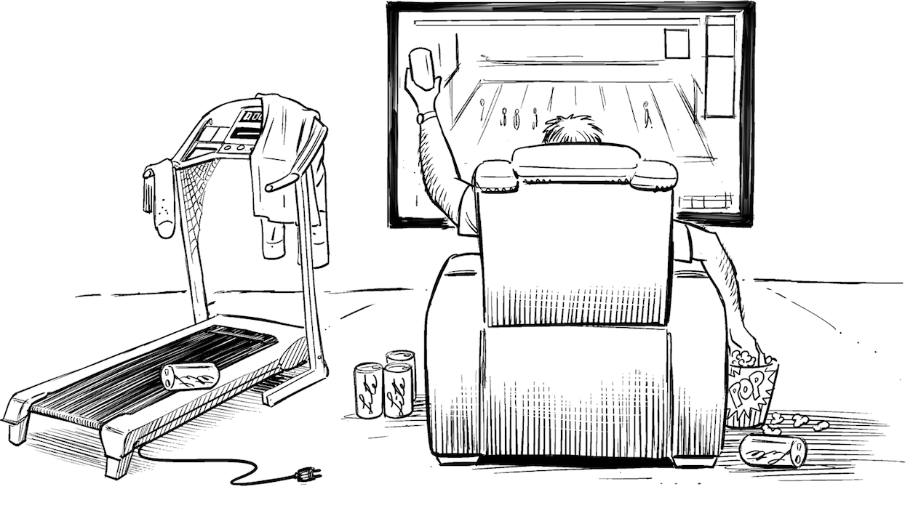

And Watching Late-Night TV Does Not Help…

A colleague of mine once attended a “digital showcase” event in his company, which highlighted many innovative projects and external hackathons the company had organized. Upon returning to his desk, though, he found himself in the same old corporate IT world where he is forced to clock time, cannot get a server in less than three weeks, and isn’t allowed to install software on his laptop. He was wondering whether he was caught in some twisted incarnation of two-speed IT, but that made little sense; after all, his project was part of the fast-moving “digital” speed.
I had a different answer: transformation is a difficult and time-consuming process that doesn’t happen overnight. People just don’t wake up one day and behave completely differently, no matter how many TED Talks they listened to the day before. (A talk I once attended illustrated how difficult it is to change which part of the body you dry first with your towel after taking a shower in the morning. I guess the speaker was right—I never changed that.)
To illustrate the stages a person or an organization tends to go through when transforming their habits, I drew up the example of someone changing from eating junk food to leading a healthy lifestyle. With no scientific evidence, I quickly came up with 10 stages:
You eat junk food. Because it’s tasty.
You realize eating junk food is bad for you. But you keep eating it. Because it is tasty.
You start watching late-night TV weight-loss programs. While eating junk food. Because it is so tasty.
You order a miracle exercise machine from the late-night TV program. Because it looked so easy.
You use the machine a few times. You realize that it’s hard work. Worse yet, no visible results were achieved during the two weeks you used it. Out of frustration you eat more junk food.
You force yourself to exercise even though it’s hard work and the results are meager. You’re still eating some junk food, though.
You force yourself to eat healthier, but find it not tasty.
You actually start liking vegetables and other healthy food.
You become addicted to exercise. Your motivation changed from losing weight to doing what you truly like.
Friends ask you for advice on how you did it. You have become a source of inspiration to others.
Change happens incrementally, and it will take a lot of time plus dedication.
Drawing the analogy between my colleague’s situation and my freshly created framework, I concluded that they must be somewhere between stage 3 and 4 on their transformation journey. What he attended was the digital equivalent of watching late-night miracle solutions. Maybe the company even invested in or acquired one of the nifty startups, which are young, hip, and use DevOps. But upon returning to his desk, he experienced that the organization was still eating lots of junk food.
I suggest that the transformation scale from 1 to 10 isn’t linear: the critical steps occur from stage 1 to 2 (awareness, not to be underestimated!), 5 to 6 (overcoming disillusionment) and from 7 to 8 (wanting instead of forcing yourself). I would therefore give his company a lot of credit for starting the journey, but warn them that disillusionment is likely to lie ahead.
It can be amazing how gullible smart individuals and organizations become when they are presented with miracle claims for a better life. As soon as people or organizations have entered stage 3, whole industries that are built on selling “snake oil” eagerly await them, overweight individuals and slow-paced corporate IT departments alike: late-night weight-loss commercials and shiny demos showing business people building cloud solutions in no time. As Russell Ackoff once pointedly put it, in “A Lifetime of Systems Thinking”:1
Managers are incurably susceptible to panacea peddlers. They are rooted in the belief that there are simple, if not simple-minded, solutions to even the most complex of problems.
When you are looking for a quick change, it’s difficult to resist, especially if you don’t have your own world map (Chapter 16).
Digital natives have it easy because, as the name suggests, they were born on the upper levels of the digital transformation scale and never had to make it through this painful change process. Others feel the pain and tend to search for an easy way out. The problem is that this approach will never get you beyond stage 5, where real change hasn’t happened yet.
Not everyone who buys snake oil is a complete fool, though. Many organizations adopt worthwhile practices but don’t understand that these practices don’t work outside of a specific context. For example, sending a few hundred managers to become Scrum Master certified doesn’t make you agile. You need to change the way people think and work and establish new values. Holding a standup meeting every day that resembles a status call where people report 73% progress also doesn’t transform your organization. It’s not that standup meetings are a bad idea, rather the opposite, but they are about much more than standing up.2 Real transformation has to go far beyond scratching the surface and change the system.
Systems theory (Chapter 10) teaches us that to change the observed behavior of a system, you must change the system itself. Everything else is wishful thinking. It’s like wanting to improve the emissions of a car by blocking the exhaust pipe. If you want a cleaner running car, there’s no other way than going all the way back to the engine and tuning it or transforming it into an electric car. When you want to change the behavior of a company, you need to go to its engine—the people and the way they are organized. This is the burdensome, but only truly effective way.
Some enterprise IT vendors do resemble the folks selling overpriced workout machines on late-night TV: their products work, but not quite as advertised, and they are in fact overpriced. A good walk in the park every day likely produces the same results for free. You just need to be smart enough to know that and disciplined enough to stick to it.
Many enterprise IT vendors provide genuine innovation to their customers, but at a price. Enterprise vendors range from “old school” to “selling an imitation of the new world to old enterprises” and “truly new world.” The further left on this scale your organization is, the more you will pay. My goal, therefore, is to build sufficient internal skill to use products as far to the right on that spectrum as possible. As I once stated in a slightly exaggerated way: “Corporate IT tends to pay for its stupidity. If you are stupid, you better be rich!” An organization that doesn’t have the required skill yet pays “tuition,” a concept well-known in German as Lehrgeld. If spending the money helps them do better next time, it’s a good investment. As always, I make sure to document such decisions (Chapter 8).
The consultants and enterprise vendors that surround traditional enterprises (Chapter 38) have a limited incentive to fully transform their clients into becoming digital: digital companies tend to shun consultants and largely employ open-source technology, often developed by themselves. Because externals are set to profit from the transformation path itself, they are useful in helping an enterprise start the transformation, as this brings the willingness to invest money. However, they aren’t quite as keen to catapult their customers into a state where their advice or products are no longer needed. This love-hate relationship is likely to affect the role an architect plays in the transformation effort: you can’t achieve it without external help, but you have to be aware that it’s a co-opetition rather than true collaboration.
The biggest risk during the transformation journey is suffering a relapse after having bought “snake oil” just to realize that it doesn’t achieve the promised results, or at least not as quickly as anticipated. This risk is particularly high at stages 4 or 5 of my model.
The inevitable pain of changing makes the lure of the easy path, that is, not changing or giving up halfway, a clear-and-present danger. The long-term effects of not changing are easily put aside because that pain isn’t happening yet. Plus, you already accepted the current state, even if it clearly isn’t optimal. The certainty of knowing the current state proves to be a major force against change, which carries a large amount of uncertainty—who knows whether all the projected benefits will actually materialize? It could be getting worse for all we know. This is one of the many ways we are biased and thus poor decision makers (Chapter 6).
IT organizations, especially operations teams, tend to equate change to risk (Chapter 26). The insight that change was needed often comes much later, when the cost of not having changed becomes blatantly and painfully apparent. Sadly, at that time the list of available options tends to be much shorter, or empty. This is true for individuals (“I wish I had started a healthier life when I was young”) as well as organizations (“We wish we had cleaned up our IT before we became disrupted”). When people reflect on their lives, they are much more likely to regret not having done things as opposed to the things they did. The logical conclusion is simple: do more things and keep doing those that work well.
A linear chain of events has one tricky property: the probability of making it through all steps computes as the product of the individual transition probabilities between each step and the next. Let’s say you are a quite determined person and have a 70% chance of making it from one step to the next, even though the machine you ordered from late-night TV didn’t work quite as advertised. If you compound this probability across the 9 steps needed to go from stage 1 to stage 10, you arrive at a 4% probability, 1 in 25, of making it to the goal. If you assume a fifty-fifty chance at each step, which might be more realistic (just look on eBay for barely used exercise machines), you end up with = 0.2% or 1 in 512 (!). “Against All Odds” comes to mind, even though it’s probably not Phil Collins’s best song.
The biggest enemy of change is complacency: if things aren’t so bad, the motivation to change is low. Organizations can artificially increase the pain of not changing, e.g., by creating fear or conjuring a (fake) crisis before the real crisis occurs. Such a strategy can work but is risky. It cannot be applied many times as people will start ignoring the repeated “fire drill.” Still, conjuring a crisis beats undergoing a real crisis. Many organizations only really start to change when they have a “near-death” experience. The problem is that near-death often results in actual death.
1 Russell Ackoff, “A Lifetime of Systems Thinking,” The Systems Thinker (website), https://oreil.ly/DP_Ea.
2 Jason Yip, “It’s Not Just Standing Up: Patterns for Daily Standup Meetings,” MartinFowler.com, Feb. 21, 2016, https://oreil.ly/Le5-n.